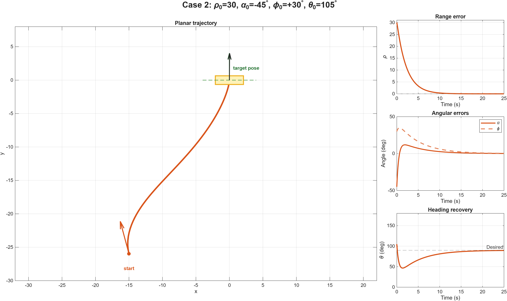
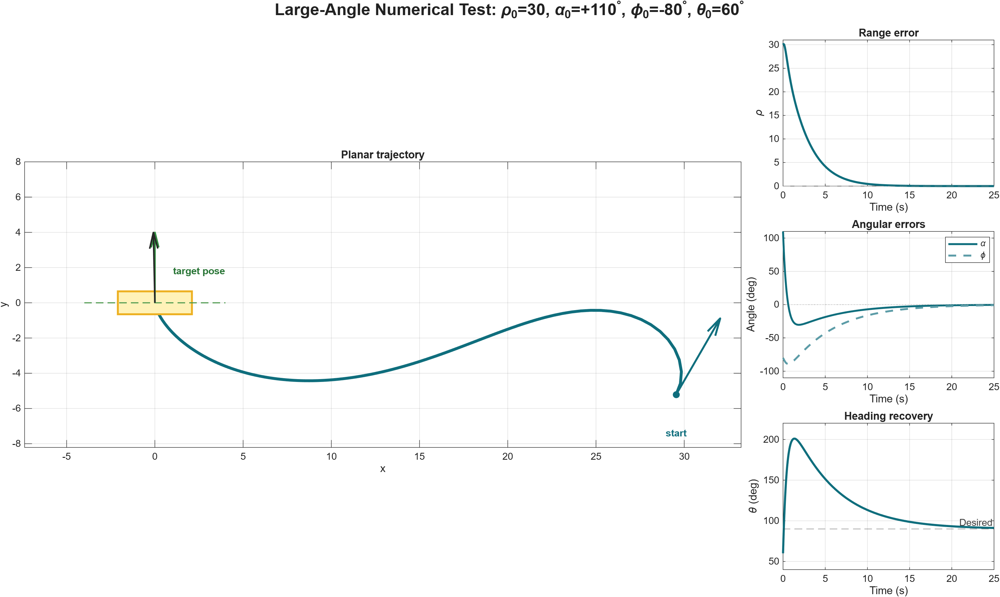

Case 1
ρ0 = 30, α0 = +45°, φ0 = +30°, θ0 = 15°

ECE 699 Course Project · Fall 2022
Unicycle trajectory-tracking project combining error-dynamics analysis, closed-loop simulation, and numerical evaluation across four initial conditions.
Validation: All four cases converged toward the target pose with near-zero range error and sub-degree angular errors.
Simulation Results
Each case is shown on its own row so that its animation and static trajectory-and-error result remain easy to inspect independently.
ρ0 = 30, α0 = +45°, φ0 = +30°, θ0 = 15°
ρ0 = 30, α0 = −45°, φ0 = +30°, θ0 = 105°

ρ0 = 30, α0 = −45°, φ0 = −30°, θ0 = 165°

ρ0 = 30, α0 = +45°, φ0 = −30°, θ0 = 75°

Additional Numerical Test
A 110° initial heading-to-target angle was evaluated using the same model and controller parameters. This is an additional test, separate from the four initial conditions documented in the course report.
ρ0 = 30, α0 = +110°, φ0 = −80°, θ0 = 60°
Numerical result at 25 s: ρ = 0.000549, |α| = 0.372°, and |φ| = 0.851°. The range briefly increases to 30.137 during the large heading adjustment before decreasing toward zero.
